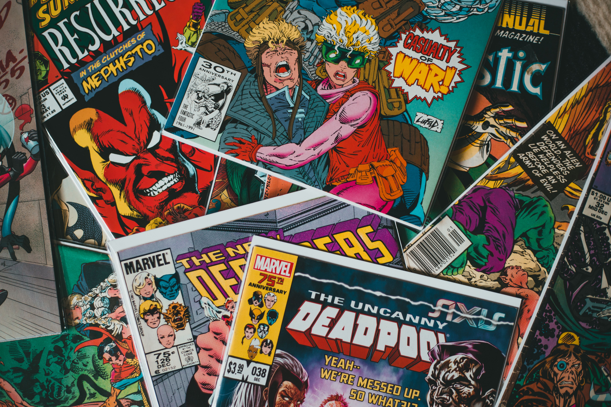

Homem de ferro (2008)
Tudo começou de forma conturbada para a marvel, que pra não falir teve que vender a propiedade de seus principais hérois (Homem aranha, quarteto fantastico, X-men etc) nessa situção toda a marvel queria fazer um filme para ter uma "semente" nos cinemas é o héroi escolhido foi o homem de ferro, um personagem que ninguém dava nada por ele, e para dificultar mais o trabalho, o ator escolhido para o papel estava envolvido em compra e consumo de drogas. Robert Dawne Junior era um ator que já foi grande no passado, mas na época passava por "Poucas é boas" então esse filme fracassou né? NÃO, DEFINITIVAMENTE NÃO, o custo de produção foi de U$150 milhões e a bilheteria foi de U$585 MILHÕES, com o RDJ (Abreviação do ator principal) roubando a cena como "Tony Stark". Tendo a aprovação de 80% entre os criticos e criando a famosa "Fórmula Marvel" e dando íncio ao MCU (Marvel Cinematic Universe) o primeiro filme da marvel foi UM SUCESSO.